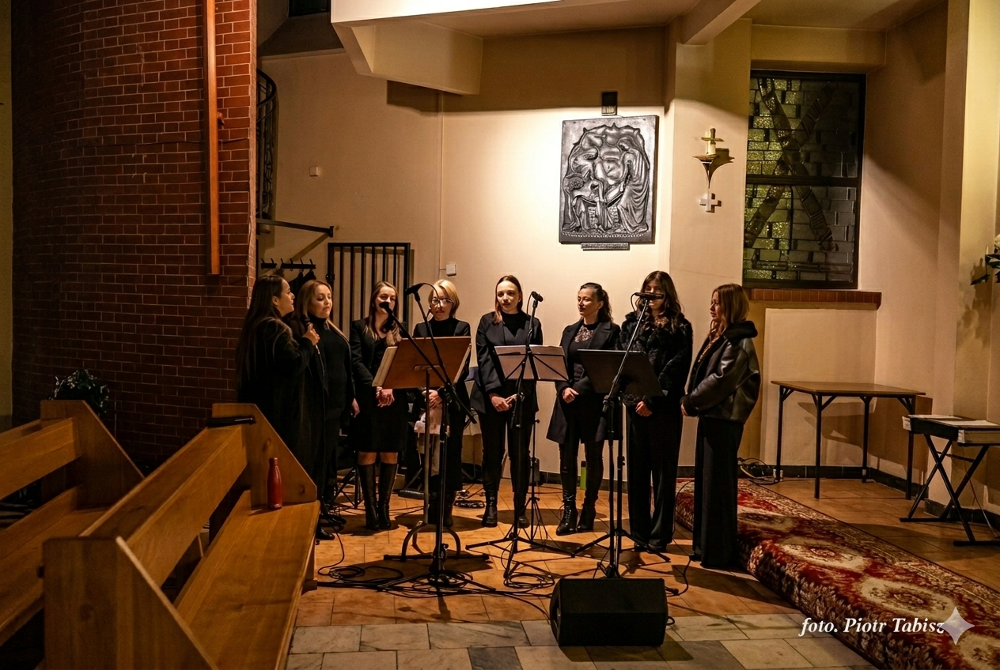

Nowy cover na YouTube!
najnowsza data, na dole najstarszeCover utworu "In The Heat Of The Night" Sandry.
Zobacz na YouTube
Cover utworu "In The Heat Of The Night" Sandry.
Zobacz na YouTube
Cover utworu "In The Heat Of The Night" Sandry.
Zobacz na YouTube
Cover utworu "Merry Christmas Everyone" Shakin' Stevensa.
Zobacz na YouTube
Miałem okazję wykonać akompaniament podczas koncertu kolęd przed pasterką o 21:30 w kościele Piotra Jana w Krośnie. Wykonaliśmy także z zespołem kilka kolęd podczas pasterki o godz. 22:00, sprawowanej pod przewodnictwem bp. Krzysztofa Chudzio.
Fotorelacja